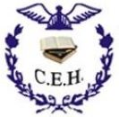
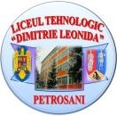

Dacia Costea
Salut! Eu sunt Dacia Costea, lucrez în învățământ și predau discipline economice și socio-umane la Colegiul Economic „Hermes” și Liceul Tehnologic „Dimitrie Leonida” din Petroșani. Acesta este locul în care poți afla mai multe despre mine, disciplinele pe care le predau și activitățile extrașcolare pe care le desfășor. Te invit să descoperi o serie de lecții create sub forma unor videoclipuri la disciplinele „Educație antreprenorială”, „Economie”, „Economie aplicată” și „Economia Întreprinderii”. Am adăugat și câteva activități extrașcolare sperând că îți vor trezi interesul pentru a te implica în acestea. Iar pentru a avea o călătorie cât mai plăcută în lumea disciplinelor economice, am creat câteva resurse interactive foarte atractive cu ajutorul platformelor „Nearpod” și „Wordwall” care te vor ajuta să înțelegi mai bine noțiunile predate la clasă.
Colegiul Economic „Hermes” Petroșani
Colegiul Economic „Hermes” din Petroșani este un liceu cu tradiție în Valea Jiului, înființat în anul 1948, având inițial denumirea de Şcoală de Comerţ. De la înființare și până în momentul actual și-a păstrat calitatea de a pregăti elevi pentru domeniul economic. Inițial a pregătit vânzători de produse alimentare sau nealimentare (textile, încălţăminte), bucătari, ospătari, timp de un an croitori, iar când a devenit liceu în anul 1975, a pregătit elevi pentru a deveni contabili. Titulatura de colegiu economic și denumirea actuală a dobândit-o în anul 2002, iar oferta educațională a fost adaptată în permanență în concordanță cu cele trei domenii principale: economic şi administraţie, turism şi alimentaţie, comerţ. În prezent, în cadrul liceului funcționează clase de liceu zi și seral, clase de învățământ profesional și clase de învățământ postliceal, elevii fiind pregătiți pentru a se integra pe piața locală, națională și internațională a muncii. Începând cu anul școlar 2024-2024, în cadrul colegiului va funcționa și o clasă cu profil sportiv, specializarea handball.
Prezentare generală a cursurilor, resurselor interactive și activităților pe care le desfășor
Acesta este un web de prezentare a lecțiilor de Economie sub forma unor videoclipuri care vă vor ajuta să reluați informațiile despre factorii de producție, productivitatea, costul de producție și profitul.
Vezi lecțiileWebsite de prezentare a disciplinei „Economie”
Web-ul de prezentare a lecțiilor de Economie Aplicată include câteva videoclipuri care vă ajută să vă reamintiți cunoștințele despre buget, economisire, asigurări sau creditul pentru persoane fizice.
Vezi lecțiileWebsite de prezentare a disciplinei „Economie Aplicată”
Vă invit să vizionați videoclipurile de pe web-ul de prezentare a lecțiilor de Educație Antreprenorială pentru a relua noțiuni despre întreprinzător, societăți comerciale, planul de afaceri, resurse.
Vezi lecțiileWebsite de prezentare a disciplinei „Educație Antreprenorială”
Dacă vă place să vă implicați în activități extrașcolare, aveți ocazia să vizionați videoclipurile de pe web-ul de prezentare a Activităților Extrașcolare, pentru a vă dezvolta noi abilități și competențe.
Vezi activitățileWebsite de prezentare „Activități Extrașcolare”
Web-ul de prezentare a lecțiilor la Economia Întreprinderii vă ajută să reluați noțiunile prezentate la clasă, pentru a vă familiariza cu ceea ce înseamnă întreprinderea și organizarea acesteia.
Vezi lecțiileWebsite de prezentare a disciplinei „Economia Întreprinderii”
Am creat acest web de prezentare a Resurselor Interactive, deoarece știu că vă plac jocurile educative. Aceste resurse includ lecții și fișe de lucru interactive, care vă ajută să învățați într-un mod atractiv.
Vezi resurseleWebsite de prezentare „Resurse Interactive”
Liceul Tehnologic „Dimitrie Leonida” Petroșani
Liceul Tehnologic „Dimitrie Leonida” din Petroșani a fost înființat în anul 1966, sub denumirea de Liceu Industrial Minier. Domeniile pentru care pregătea elevii au fost exploatări miniere şi electromecanică minieră, deoarece Valea Jiului este o zonă în care mineritul a reprezentat până de curând activitatea principală. În anul 2010 a dobândit titulatura de colegiu tehnic până în anul 2018, când și-a schimbat denumirea în Liceul Tehnologic „Dimitrie Leonida”. Începând cu anul 2011, în urma unor decizii de reorganizare, Școala Generală nr. 2 din Petroșani devine structură a liceului. Datorită necesității adaptării în permanență a ofertei educaționale la cerințele pieței muncii, în cadrul liceului sunt pregătiți elevi pentru domenii foarte variate: mecanici auto, tehnicieni proiectanți CAD, tehnicieni operatori tehnică de calcul, confecționeri produse textile, frizeri, manichiuriști, pedichiuriști, laboranți pentru protecția calității mediului, tehnician diagnostic auto, maistru mecanic sau energetic. În cadrul liceului există și clase de învățământ profesional special.